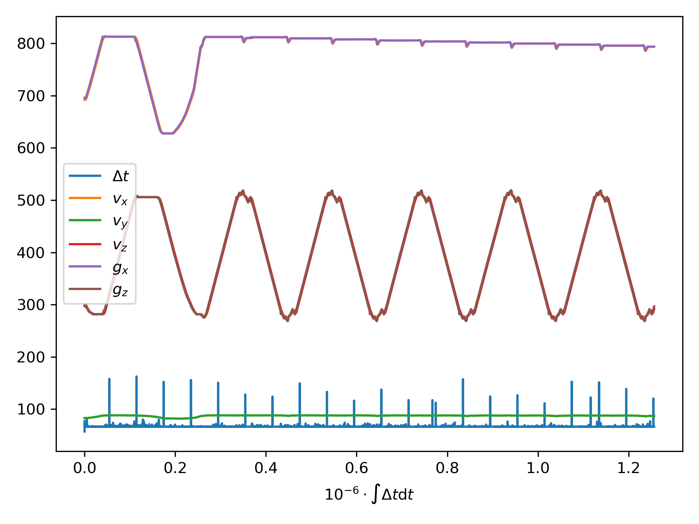

Data Exfiltration
Thanks to the Lua extension in VSC from user sumneko, I can F12 my way to the superclass constructor AIDriveStrategyFieldWorkCourse.new. Thanks to Copilot, I can speak Lua well enough to
function AIDriveStrategyFieldWorkCourse.new(customMt) -- We'll save telemetry data to a file as we drive: self.telemtry_file = io.open("telemetry.csv", "w") -- Write the column headers: dt, vX, vY, vZ, gx, gz, moveForwards, maxSpeed print('Opening telemetry file with columns: dt,vX,vY,vZ,gx,gz,moveForwards,maxSpeed\n') self.telemtry_file:write("dt,vX,vY,vZ,gx,gz,moveForwards,maxSpeed\n") -- ... end function AIDriveStrategyFieldWorkCourse:getDriveData(dt, vX, vY, vZ) -- ... generate gx, gz here ... -- Save the data to the telemtry file. self.telemtry_file:write(string.format( "%f,%f,%f,%f,%f,%f,%s,%f\n", dt, vX, vY, vZ, gx, gz, tostring(moveForwards), self.maxSpeed )) -- ... end
And voila, I have a CSV file.
 That was all so much easier than in GTAV with C++ compilation cycles and those terrible (but brilliant) ScriptHookV memory hacks to get data out and commands in.